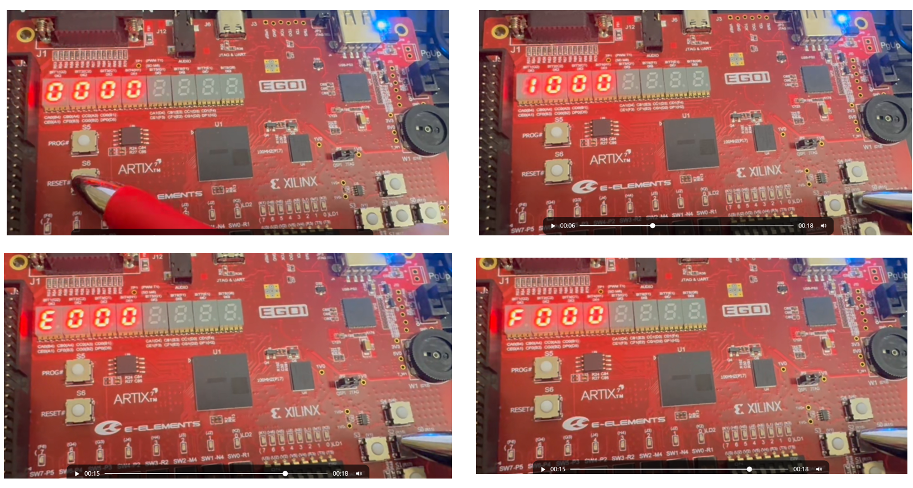

Digital Logic: Button-Driven Counter Display
Objectives
- Master the design of module interconnections through a top-level module.
- Practice assembling the independent modules into a complete system.
- Understand module-interface design and signal-naming conventions.
- Build a single-digit hexadecimal counter display: each button press advances the display by one value in a repeating 0–F–0 sequence.
1. Review of Modular Design
1.1 Required Modules
In previous weeks, we implemented the following independent modules:
| Module | Function |
|---|---|
counter_mod |
Modulo-N counter with enable and carry |
dynamic_display |
Seven-segment display driver |
btn_debounce |
Button debouncing |
edge_detect |
Edge detection |
1.2 Top-Level Block Diagram
┌──────────────────────── 顶层模块 ──────────────────────┐
│ │
│ ┌──────────┐ pulse ┌──────────┐ count │
clk─→│ │ btn_deb │ ────────→│ counter │────────┐ │
btn─→│ │+ edge_de │ │ MOD(16) │ │ │
│ └──────────┘ └──────────┘ │ │
│ │ │
│ digit0 │ │
│ ┌─────────────────┐←──│ │
│ │ dynamic_display │ │ seg ──→ seg
│ digit1,2,3 = 0 ───→│ (4位) │───┤─→ an ──→ an
│ └─────────────────┘ │
│ │
└───────────────────────────────────────────────────────┘
2. Project Requirements: Single-Digit Counter Display
2.1 Functional Description
Design a single-digit hexadecimal counter display:
- Use one seven-segment digit to display a single hexadecimal value.
- Display sequence: 0 → 1 → 2 → ... → 9 → A → B → ... → F → 0, repeating continuously.
- Increment the displayed value by 1 on each button press.
- Button debouncing ensures that each press produces exactly one pulse.
- Pressing the reset button clears the value to zero.
2.2 Module Decomposition
| Submodule | Instances | Function |
|---|---|---|
counter_mod #(.MOD(16)) |
1 | Modulo-16 counter (0–9, A–F) |
dynamic_display |
1 | Display driver using one digit |
btn_debounce |
1 | Button debouncing |
edge_detect |
1 | Button edge detection |
2.3 Design Flow
按键 → 消抖 → 边沿检测 → 计数器enable → 计数器输出 → 数码管显示
(btn) (clean) (pulse) (en) (count) (seg)

3. Writing the Top-Level Module
3.1 Port Declarations
module hex_counter_top (
input clk, // 100MHz 系统时钟
input btn, // 按键 （Ego1：R15）
output [7:0] seg, // 数码管段选
output [3:0] an // 数码管片选
);
3.2 Complete Top-Level Module Framework
module hex_counter_top (
input clk, // 100MHz 系统时钟
input btn_inc, // 增加按键
output [7:0] seg, // 数码管段选
output [3:0] an // 数码管片选
);
// 内部信号
wire btn_clean; //消抖后的按键信号
wire btn_pulse; //按键脉冲
wire [3:0] count;
// 按键消抖
btn_debounce u_deb (
.clk(clk), .rst_n(1'b1),
.btn_in(btn), .btn_out(btn_clean)
);
// 边沿检测
edge_detect u_edge (
.clk(clk), .rst_n(1'b1),
.sig_in(btn_clean),
.pos_edge(btn_pulse), .neg_edge()
);
// 计数器
counter_mod ...
// 数码管显示
dynamic_display ...
endmodule
3.3 Key Connections
| Signal | Source | Destination | Purpose |
|---|---|---|---|
btn → btn_clean |
Button → debounce module | Debounced signal | Remove button bounce |
btn_clean → btn_pulse |
Debounce → edge detector | Pulse signal | Trigger on the rising edge |
btn_pulse → counter_mod.en |
Pulse → counter | Count enable | Increment once per pulse |
count → digit[?] |
Counter → display | Single-digit value | Hexadecimal display |
digit[?] |
0 | Display | Other digits remain blank |
seg, an |
Display driver | External display | Segment- and digit-select signals |
4. Laboratory Exercise
Step 1: Prepare the Submodules
Copy the following modules into the project:
counter_mod.v—check the parameter settingdynamic_display.vbtn_debounce.vedge_detect.v
Step 2: Write the Top-Level Module
Following Section 3, write hex_counter_top.v:
- Instantiate the button debounce, edge-detection, counter, and display-driver modules.
- Important: Connect
btn_pulsecorrectly tocounter_mod.en. - Set
counter_mod.MODfor counting from 0 through 15. - Connect
countonly todigit0; set all other digits to 0.
Step 3: Simulation and Verification (Optional)
- Verify that each button event increments the count exactly once. Adjust the debounce parameter to suit the simulation duration.
- Verify the hexadecimal sequence 0→1→...→9→A→B→C→D→E→F→0.
Step 4: Pin Constraints and On-Board Verification
- Use the display constraints.
- Add a constraint for the button selected as the increment button.
- Activate only the rightmost digit (
an[0]=0, with all other bits set to 1).
5. Questions
Q1: Without modifying counter_mod, how can you change only the top-level connections so that the counter runs from 0 through 9 (decimal) instead of 0 through F?
- Use a parameterized setting.
Q3: How would you modify the design to display a two-digit hexadecimal value from 0x00 through 0xFF?
Approach:
- Cascade two counters, one for the low digit and one for the high digit.
- Low-digit enable =
btn_pulse. - High-digit enable = the low digit's carry signal.
- Connect the two count values to two display digits.
Q4: Why use the dynamic_display module instead of driving the display directly?
Analysis:
dynamic_displayencapsulates the seven-segment drive logic and the mapping of hexadecimal values to glyphs.- Modularity improves code reuse and readability.
- The module supports multiplexed scanning of multiple display digits.